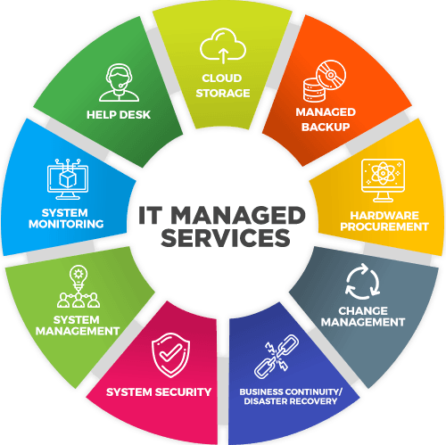

Services NDS Provides
Explore the solutions that drive your digital success, powered by innovation, quality, and performance.
Services
Have a Question?
Guidewire Solutions
Our Guidewire solutions are designed to help insurers streamline operations, improve customer experience, and stay ahead in a competitive market. With expertise in PolicyCenter, BillingCenter, and ClaimCenter, we deliver tailored implementations, seamless integrations, and performance-driven upgrades.
From initial consultation to post-go-live support, our team ensures smooth delivery, minimal risk, and maximum return on investment. Whether you need a full-scale deployment, system optimization, or cloud migration, we provide the technical skill and industry insight to make your Guidewire transformation a success.
Our Guidewire Services Include:
- Full implementation, deployment & integration of PolicyCenter, ClaimCenter, and BillingCenter
- Tailored workflows, UI enhancements, and business rules to align with your processes.
- Data migration & system upgrades without disruption
- Secure and efficient integration with third-party systems, payment gateways, and core insurance platforms.
- Enhancing speed, scalability, and system reliability for peak efficiency.
- Analytics enablement for smarter decision-making
- Provide ongoing support, maintenance, and enhancements for Guidewire solutions.
Why Organizations Choose NDS for Guidewire Solutions?
- Proven expertise in seamless Guidewire implementation and migration.
- Complete lifecycle services from requirement analysis to post-go-live support, ensuring smooth delivery and minimal downtime.
- Deep insurance industry expertise to deliver efficient, compliant solutions that enhance customer experience.
- Expertise in customizing Guidewire apps and seamless integration with third-party systems to fit business processes.
- Strict QA and performance standards ensure our solutions are robust, secure, and future-ready.
- Skilled team with deep knowledge of insurance processes and compliance.
- Commitment to delivering measurable business value and faster ROI.
- Proven success delivering Guidewire projects for top insurers, building trust through results and lasting partnerships.
With a proven track record and deep domain expertise, we ensure your Guidewire transformation is fast, reliable, and results-driven.
Whether you're adopting Guidewire for the first time or upgrading an existing system, we ensure a smooth, efficient, and scalable transformation.

AI Technologies
Next-Gen AI Solutions — Transforming Business with Intelligence
Harness the limitless potential of Artificial Intelligence to revolutionize how your business operates, engages customers, and makes decisions. Our AI-driven solutions are designed to solve real-world business challenges with speed, precision, and innovation — helping you stay ahead in today’s competitive landscape..
From predictive insights that give you a clear vision of the future to intelligent automation that streamlines workflows, our expertise empowers organizations to grow faster, work smarter, and innovate continuously.
Our AI Expertise Inculdes:
- Machine Learning
- Natural Language Processing (NLP)
- AI Integrations
- Computer Vision
What Our AI Team Does:
- Design and develop custom AI models tailored to business needs.
- Build intelligent automation solutions to improve operational efficiency.
- Integrate AI capabilities into existing software and workflows.
- Develop predictive analytics systems for data-driven decision-making.
- Provide AI model training, optimization, and continuous improvement.
Why Organizations Choose NDS for AI Technologies:
- Customized AI solutions designed to solve your specific business needs.
- Complete support—from concept and strategy to launch and ongoing improvement.
- Ethical, transparent, and explainable AI that builds confidence and trust.
- Smooth integration with your existing systems for quick adoption.
- Forward-thinking innovation to keep your business ahead of the curve.
With our AI capabilities, businesses can unlock automation and innovation across every department.

Web Technologies
Modern web design and development for user-centric digital experiences.
At NDS, we craft modern, user-focused web solutions that go beyond design — delivering digital experiences that engage, convert, and scale with your business.
Our expert team combines creative design with advanced technologies to build websites that are visually striking, lightning-fast, secure, and responsive across all devices.
From sleek corporate websites to complex custom-built portals, we ensure every click is intuitive, every interaction meaningful, and every visit impactful.
Our Web Technology Expertise Includes:
- Full-Stack Development
- AI-Powered Chatbot Integration
- Responsive UI/UX Design
- CMS Integration & Headless Architecture
- Enterprise-Grade Web Security
- Performance Optimization
- Custom Portals & Dashboards
- AI-Powered Chatbot Integration
Why Organizations Choose NDS for Web Technologies:
- Creative Excellence – Designs that reflect your brand and captivate your audience.
- Technical Mastery – Robust, future-ready technology stacks.
- Business Alignment – Solutions that directly support your strategic goals.
- End-to-End Partnership – From initial discovery to ongoing optimization.
Whether you're launching a brand-new site or revamping an existing one, we deliver solutions that merge design elegance with technical excellence.

Database Management
Reliable, Secure, and Scalable Data Infrastructure for the Modern Enterprise
At NDS, we understand that data is the digital backbone of your organization. Whether it’s powering mission-critical applications or driving business intelligence, your database environment must be fast, secure, and future-ready. Our comprehensive Database Management Services are designed to deliver exactly that — with precision, performance, and peace of mind.
From foundational architecture to ongoing performance tuning, we build and manage database ecosystems that empower you to scale confidently, reduce risks, and make data-driven decisions in real time.
What We Deliver:
- Custom Database Architecture & Design
- Seamless Data Migration & Consolidation
- Performance Tuning & Optimization
- Backup, Disaster Recovery & High Availability
- Enterprise-Grade Security & Compliance
- Ongoing Monitoring & Maintenance
Why Enterprises Choose NDS for Database Management:
- Proven expertise across SQL & NoSQL ecosystems.
- Scalable solutions for startups, enterprises, and cloud-native apps.
- End-to-end lifecycle support from design to optimization.
- Deep focus on data security, governance, and compliance.
- Flexible engagement models and dedicated database specialists.
Your Data, Our Responsibility
With NDS as your database partner, you gain more than just technical support — you gain strategic control over your data. Let us help you build a data environment that fuels innovation, boosts operational efficiency, and keeps your business secure.

Managed Services
Ensuring Seamless IT Operations for a Smarter, Safer, and More Agile Business.
Technology today is the backbone of every organization, powering operations, customer experiences, and innovation. However, with rapid advancements and rising complexities, managing IT infrastructure has become more demanding than ever. Businesses can no longer afford downtime, inefficiencies, or fragmented processes that slow growth and impact productivity.
Our Managed Services act as an extension of your team—delivering proactive management, continuous monitoring, and end-to-end support to ensure your entire IT ecosystem functions at peak efficiency. From infrastructure and applications to security and compliance, we handle it all—so you can focus on driving business outcomes, not troubleshooting IT challenges.
What Our Team Does:
- 24/7 Monitoring & Support – Always-on monitoring to detect and resolve issues before they affect your business.
- IT Infrastructure Management – Complete management of servers, networks, and cloud platforms for peak performance.
- Security & Compliance – Strong protection with continuous threat detection and regulatory compliance.
- Helpdesk Services – Fast, expert assistance to resolve end-user IT challenges quickly.
- Backup & Disaster Recovery – Reliable backup and recovery solutions to keep your data and business safe.
- Scalability & Optimization – Flexible scaling and performance tuning to match your evolving needs.
Why Organizations Choose NDS for Managed Services?
- Proactive, Not Reactive – We prevent problems before they occur, saving you time and money.
- Tailored Solutions – Customized service models aligned with your business size, industry, and IT landscape.
- Certified Expertise – A team of specialists skilled across multiple domains including networking, security, cloud, and enterprise applications.
- Predictable Costs – Transparent pricing with no hidden surprises, helping you optimize IT spend.
- Business Agility – With IT operations taken care of, your teams can focus on innovation and growth instead of technical roadblocks.
With our Managed Services, you gain more than IT support—you gain a strategic partner dedicated to ensuring your business runs without interruption, adapts to change, and stays ahead in a competitive digital era.
Business Systems Analysis (BSA)
At NDS, our Business Systems Analysis practice ensures that technology investments directly translate into business outcomes. We go beyond documenting requirements — we align technology with strategy, enabling businesses to operate smarter, faster, and more efficiently.
Our BSAs act as strategic enablers who understand both the business domain and technical landscapes. From initial discovery to implementation support, they ensure that every solution is fit-for-purpose, scalable, and measurable in value.
What Our BSA Team Does:
- Strategic Requirement Management: Transforming business needs into actionable technical roadmaps.
- Process Optimization: Identifying inefficiencies and recommending improvements.
- Solution Alignment: Ensuring technology aligns with organizational goals, not just IT needs.
- Data-Driven Decisions: Leveraging analytics for requirements validation and future planning.
- Change Enablement: Supporting smooth transitions with clear documentation and stakeholder buy-in.
Why Organizations Choose NDS for BSA Services?
- Business-Aligned IT Solutions bridging strategy with technology.
- Reduced Rework & Faster Delivery through precise requirement engineering.
- Future-Proof Designs that scale with evolving business needs.
- Transparent Communication across stakeholders and teams.
- Proven Expertise in Large-Scale Transformations across industries.
"With NDS BSA, business goals are not just defined — they’re delivered."

Quality Assurance (QA)
At NDS, Quality Assurance isn’t just about finding bugs — it’s about ensuring that every product we deliver is stable, scalable, and built for long-term success. Our QA practice is designed to deliver business confidence by guaranteeing that software performs seamlessly under real-world conditions.
By combining proven test methodologies, automation-first strategies, and domain expertise, we help organizations reduce risks, control costs, and accelerate time-to-market — without compromising on quality.
Our QA Strengths:
- End-to-End Testing: Functional, regression, integration, security, performance, and UAT.
- Automation-First Approach: Frameworks that improve speed, coverage, and repeatability.
- Performance & Reliability Assurance: Ensuring applications can handle scale and load.
- Domain-Specific Expertise: Tailored QA for industries like insurance, healthcare, and finance.
- Continuous Quality: Embedding QA into DevOps pipelines for faster, safer releases.
Why Partner with NDS QA?
- Reduced Business Risks through early validation and continuous quality checks.
- Cost-Effective QA Scaling from small modules to enterprise-wide systems.
- Future-Ready Testing with automation, cloud, and AI-driven validation
- Improved User Satisfaction with reliability, usability, and accessibility testing.
- Proven Track Record of supporting mission-critical enterprise applications.
"With NDS QA, quality is not an afterthought — it’s built into every step of delivery."

Cloud Services
Empowering Agility, Innovation & Scalability Through Cloud Transformation
In today’s fast-paced digital landscape, agility is everything — and the cloud makes it possible. At NDS, we help businesses unlock the full potential of cloud computing by designing, deploying, and managing scalable, secure, and cost-effective cloud environments.
Whether you're modernizing legacy systems, moving to a hybrid model, or building a cloud-native application from scratch, our team ensures that your cloud journey is seamless, strategic, and future-ready.
Our Cloud Expertise Covers:
- Cloud Architecture & Deployment
- Serverless & Containerized Solutions
- DevOps & Automation
- Monitoring, Cost Optimization & Support
Why Choose NDS for Cloud Services?
- Expertise across multi-cloud, hybrid, and cloud-native environments.
- End-to-end support — from migration strategy to ongoing optimization.
- High availability and disaster recovery built into every deployment.
- Cloud security best practices including identity management, encryption, and compliance.
- Continuous innovation with zero compromise on performance or security.
Cloud Confidence, Delivered
With NDS as your cloud transformation partner, you gain more than just infrastructure — you gain the freedom to innovate, scale on demand, and stay resilient in an ever-changing digital world.